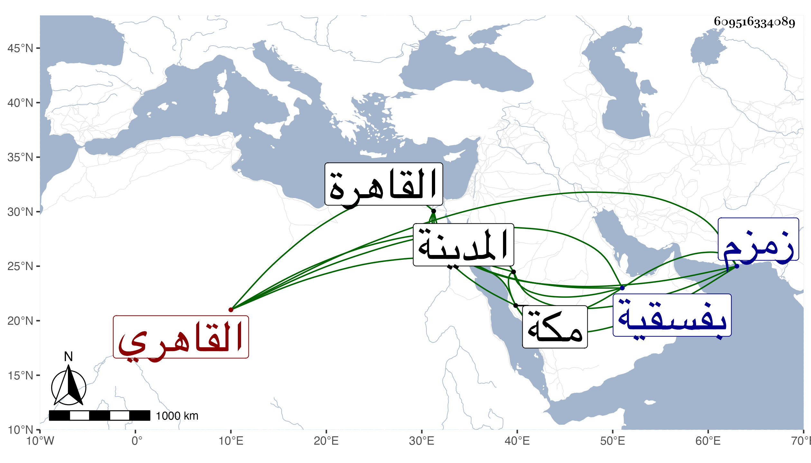

0902Sakhawi.DawLamic.ITO20230111-ara1.EIS1600.609516334089
Biography ID: 609516334089
306
محمد بن يوسف بن عبد الكريم الكمال بن الجمال القاهري سبط الكمال ابن البارزي وأخو أحمد ووالد البدر محمد الماضيين والآتي أبوه ويعرف بابن كاتب جكم . ولد سنة ثلاث وخمسين وثمانمائة بالقاهرة ونشأ بها في كنف أبويه فحفظ القرآن والعمدة والمنهاجين الفرعي والأصلي وألفية النحو وعرض على مشايخ الوقت بل على السلطان وقرأ في الفقه على الجلال البكري ولازمه بل وعلى المناوي في آخرين واستقر في نظر الجوالي بعد العلاء الصابوني في سنة سبعين وفيها حج حين كان صهره خير بك أمير المحمل وكان معه الولوي الأسيوطي فكان يكرر عليه في ماضيه والنور البرقي واستصحب معه الابتهاج بأذكار المسافر الحاج من تأليفي فكان يراجعني في بعض ألفاظه ومعانيه ورجع فاستمر في وظيفة أبيه نظر الجيش في سابع صفر التي تليها بعد صرف التاج بن المقسي واستقر أخوه عوضه في نظر الجوالي وتشاهم وتضاخم وتزايدت وجاهته وكثر التردد إليه والتمس مني المجيء له للقراءة علي فاعتذرت بعادتي في ترك التردد لأحد بسبب ذلك وكذا بلغني عن ابن أبي شريف وسلك الفخر الديمي مسلكه حيث تردد لقراءة من يقرا عليه بحضرته ، وكثر تعلله بالقولنج ونحوه ومقاساته من الملك ما الله به عليم مرة بعد أخرى بحيث وضعه ليضربه إلى أن استأذن في الحج سنة تسع وثمانين وسافر فحج وتأخر هناك السنة التي تليها وتوجه في سابع جمادى الأولى إلى المدينة النبوية فوصلها في ثامن عشرة وقرأ هناك بالروضة النبوية على الشيخ محمد المراغي الشفا وباشر الخدمة مع الخدام وتصدق بما قيل أنه خمسمائة دينار مما لم يثبت وكان على خير وعاد فوصل مكة في شعبان فلم يلبث أن مات بعد انقطاعه ثمانية أيام في عصر يوم الخميس ثامن عشريه وبادروا لإخراجه ليدرك ليلة الجمعة في قبره فصلي عليه بعد العصر بساعة بعد النداء عليه فوق قبلة زمزم وشيعه خلق ثم دفن بفسقية كان مملوك أبيه سنقر الجمالي أعدها لنفسه قديما من المعلاة رحمه الله وعفا عنه .
